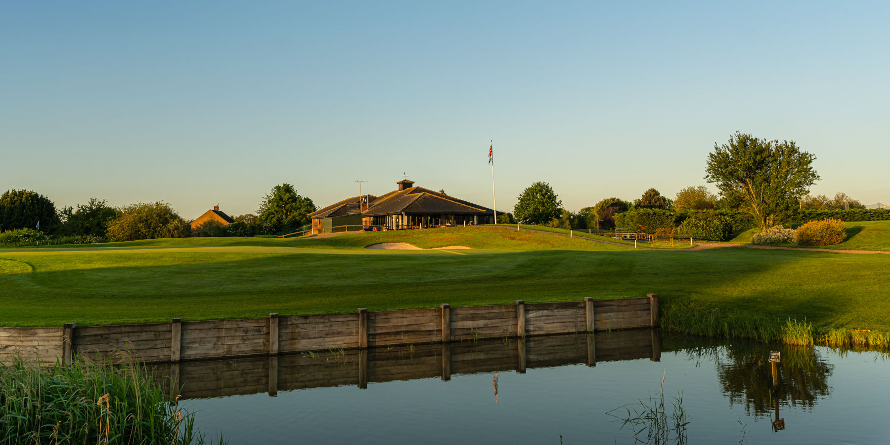
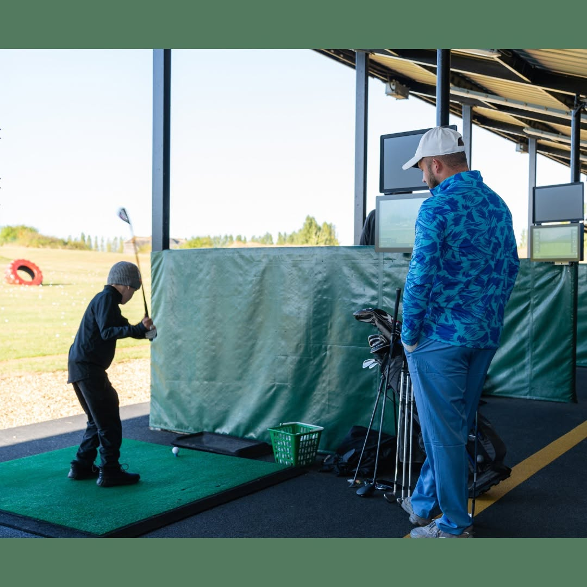
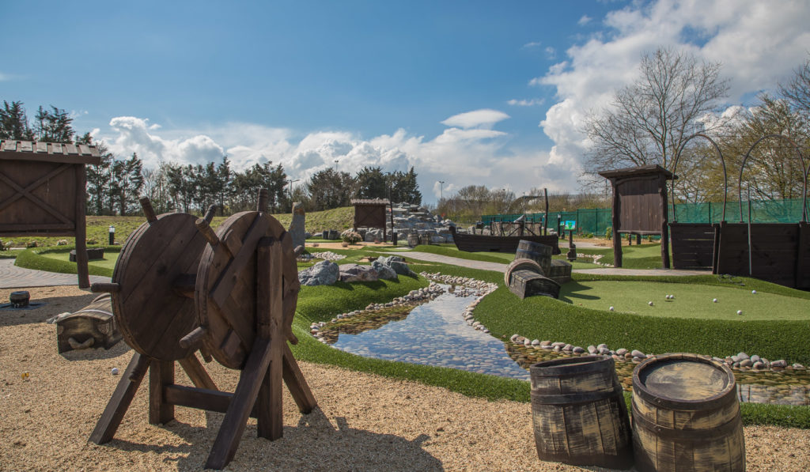
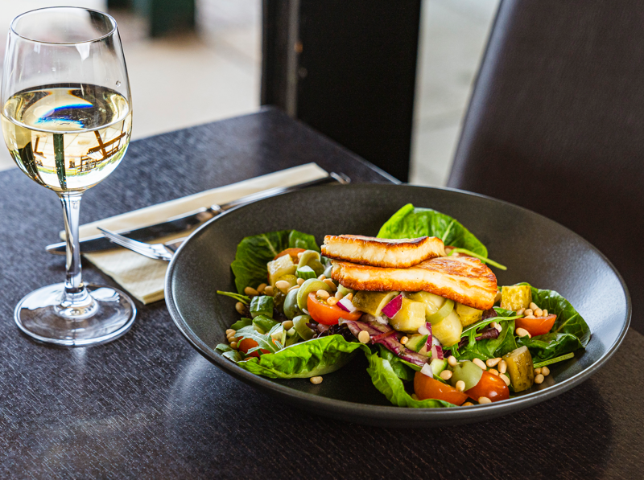
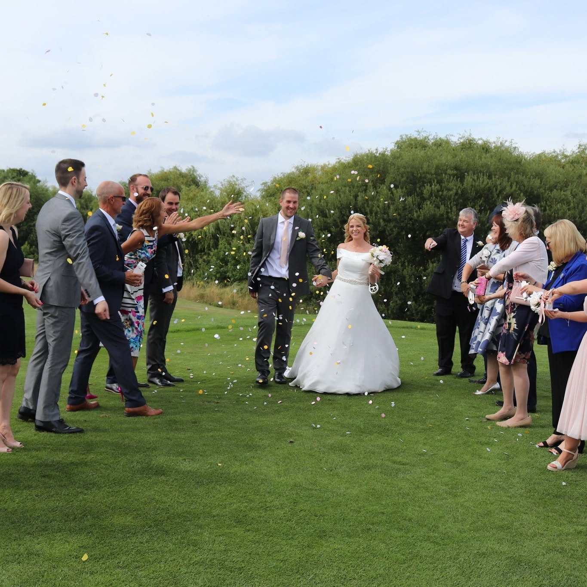
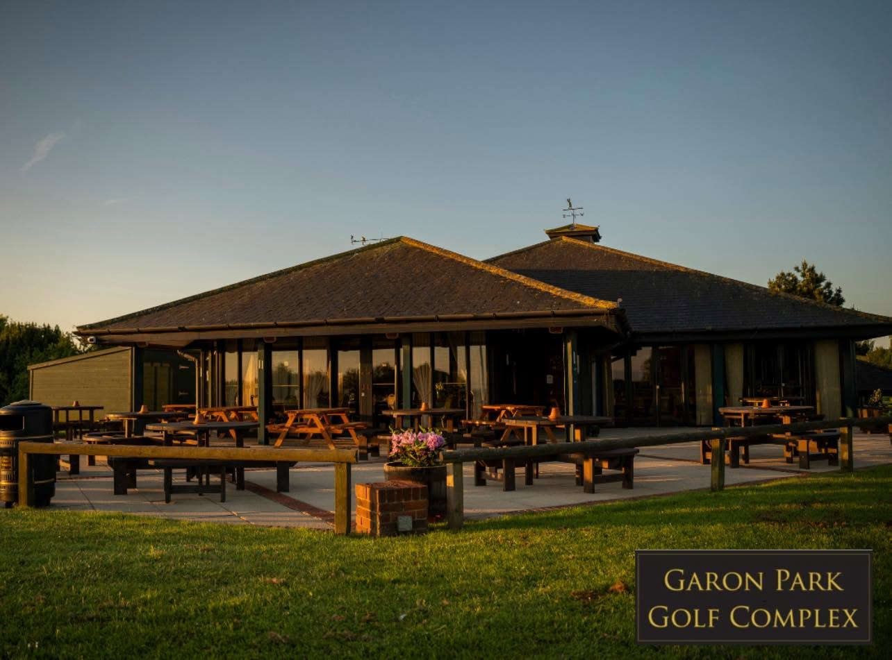

Courses in our world
We understand golf audiences, seasonality, booking behaviour and the levers that move revenue.

The Revenue Club helps golf venues turn attention, enquiries and customer journeys into measurable commercial growth. We create the sales and marketing strategy from data, then implement it without needing intervention from the club.
You have a broad revenue mix: golf, memberships, visitor green fees, societies, adventure golf, lessons, range activity, food and beverage, weddings and events. That breadth creates opportunity, but it also means marketing has to be proactive, joined up and commercially accountable.
The frustration with the current agency is clear: too much driving from your side, not enough commercial ownership from theirs. Our role is to take responsibility for revenue momentum, become part of the team, spot the revenue moments, act on them and report back on results.




We understand golf audiences, seasonality, booking behaviour and the levers that move revenue.
We build the strategy, manage the cadence and keep the work moving without waiting for requests.
Results, pipeline movement and next actions are reported clearly so commercial decisions stay grounded in performance.
This is the level of support we would recommend for Garon Park: senior strategic direction and practical delivery across the revenue areas that matter most.
Quarterly priorities, campaign calendars, offer strategy and a clear view of where growth will come from, built from the data first.
Paid social, search, landing page thinking and audience targeting aligned to golf, events and hospitality.
Campaign creative, graphic design, social themes and content briefs that make Garon Park feel active, local and commercially sharp.
Lead handling, enquiry journeys, CRM structure, follow-up prompts and practical improvements that help the team convert demand.
Operational reporting, pipeline visibility, recommendations and next actions that show what is driving revenue.
Ongoing collaboration with the club team, while TRC takes responsibility for driving the work rather than simply responding to requests.
The service is designed to remove the burden from Garon Park. We set the plan from the data, implement the activity, report on results and keep the revenue agenda moving.
Build the sales and marketing plan around CRM data, enquiry trends, booking behaviour, revenue streams and seasonal opportunity.
Plan, write and fulfil campaigns for prospects, visitors, societies, event leads and member newsletter communications.
Create campaign graphics, offer assets, email visuals, social content and supporting design materials for revenue activity.
Update website copy, campaign pages, offers, menus, event content and key conversion messaging. This is content management, not development.
Garon Park has multiple reasons for people to visit, spend and return. The plan should not treat each revenue stream as a separate campaign island.

This is not simply a marketing retainer or a CRM implementation. The Revenue Club will take ownership of the sales and marketing activity needed to drive revenue, report on results and make the system work across the complex. The activity below forms part of the proposed enhanced service and will be coordinated by our team alongside Garon Park's leadership and venue teams.

Web forms, booking data, event enquiries, membership interest and campaign responses enter cleanly.
Rules route opportunities by venue, product, value, urgency and owner so leads do not drift.
Automations keep visitors, prospects, lapsed golfers and event organisers warm between decisions.
Leadership sees channel performance, pipeline quality, conversion and revenue movement.
Configure CRM, tracking, forms, pipelines, campaign rules and reporting into one commercial operating base.
Run recurring marketing, sales and revenue actions that create demand and keep opportunities moving.
Work with Garon Park's team so enquiries, follow-up, customer data and decisions do not fall between systems.
Review performance, spot gaps, recommend action and keep refining the operating model month after month.
Planned and published content that keeps golf, adventure golf, events and hospitality visible across priority audiences.
Consistent email fulfilment for visitor, member, society, event and prospect segments, including member newsletter communications.
Campaign graphics, email assets, social visuals and offer creative produced to support the revenue plan.
Google and Meta activity managed continuously, excluding ad spend, with optimisation around audience, creative and conversion.
CRM, campaign and revenue dashboards reviewed and translated into clear actions for the next cycle.
Regular contact, action tracking, support and practical coordination so Garon Park has a proactive partner keeping momentum alive.
Landing page copy, offer content, menus, event messaging and campaign updates that keep conversion paths accurate. Development is not included.
Data quality, segmentation, workflows, pipelines, task rules and follow-up routines maintained so the system gets used properly.
Green fee performance, availability, pace, weather, booking behaviour and demand reviewed so pricing decisions stay active.
Set up access to the required systems, build and implement the CRM foundation, configure pipelines and train the team on how to use it day to day.
Work closely with the Garon Park team to embed the CRM, follow-up routines, reporting rhythm and priority campaigns, while TRC starts implementing the data-led plan.
Maintain regular communication, report results into leadership and operate as part of the team so revenue activity keeps moving without needing to be chased.
Pricing starts from £999pm and increases depending on the agreed service level, campaign volume, paid media management, reporting requirements and the amount of hands-on delivery needed across the complex.